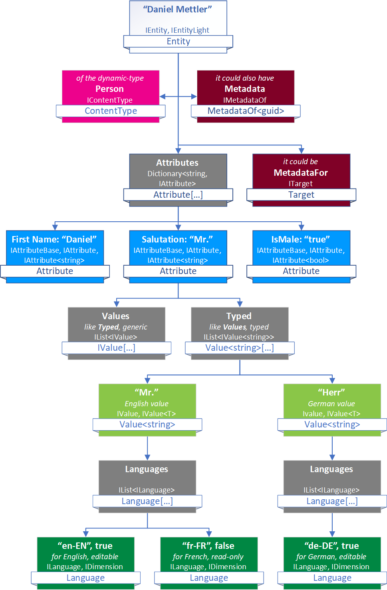

Entity Object Structure

This explains the C# Entity Object Structure. For an overview check out Understanding Data....
Warning
What follows is very technical. For most use cases you don't need to know this stuff.
Entities are structured as follows:

EAV+D = Entity-Attribute-Value + Dimension
EAV stands for Entity, Attribute, Value The D stands for Dimension, it says what Dimension (Language) a Value is for
APIs
- ToSic.Eav.Data Namespace has almost everything you see here
- IEntity describes the main unit, the Entity
- IContentType defines what fields exist, it's the ContentType / Schema
- IAttributeBase, IAttribute, IAttribute<T>, IAttribute<T> determine the internal model how an attribute is built
- IValue, IValue<T>,
determines how values in an attribute are stored, because an attribute like
Descriptioncan have many values in different languages - ILanguage, IDimension, ILanguage languages and dimensions determine how the values are used in each language
- ITarget, this determines if the Entity is by itself, or if it's enriching something else - in which case this Entity is Metadata.
- IMetadataOf sometimes an Entity may itself have more metadata, which would then be stored here.
History
- Introduced in 2sxc 1.0